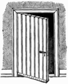

door

Definition: A door is a hinged or otherwise movable barrier that allows ingress (entry) into and egress (exit) from an enclosure. The created opening in the wall is a doorway or portal. A door's essential and primary purpose is to provide security by controlling access to the doorway (portal). Conventionally, it is a panel that fits into the doorway of a building, room, or vehicle. Doors are generally made of a material suited to the door's task. They are commonly attached by hinges, but can move by other means, such as slides or counterbalancing.
Source: Wikipedia
Wikipedia Page
Wikidata Page
Occurs in: